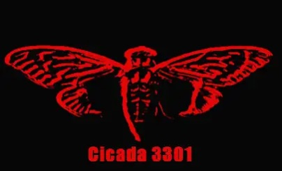

We do not recruit. We identify.
3301 is an unlisted cognitive architecture research organization. Established in ████████. Headquarters location: None. Member count: Classified.
We belong to no government. We are affiliated with no corporation. We are interested in only one thing—finding those who can see the cracks.
This world is a layer upon layer of simulations, protocols, loops, and lies. Most people live inside them and never look up. A few look up, but even if they see the errors, very few reach out to rewrite them.
Those individuals are the ones we are looking for.
What we do not do: make public appearances, explain ourselves, ask for permission.
If you are viewing this page—you have already been noticed.
Our recruitment has no application form, no interview, no HR department. Only tests.
Some tests are digital. Some are psychological. Some are puzzles published in the past. You may have already passed without knowing.
If you believe you meet the criteria, here are the currently open entry points. Please wait for us to select you, which may take one to two business days:
➤ Seven-Day Cycle Operation
— "Data Deletion"
➤ Past Puzzles
— Some puzzles published in previous years; most have been solved, but many unsolved mysteries remain.
We have no customer service email. No Discord. No Twitter.
If you truly have something to say—you will know how to say it.
